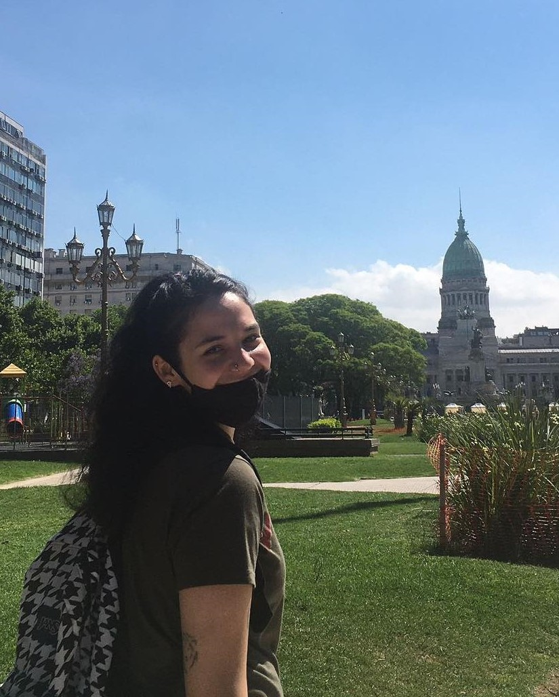
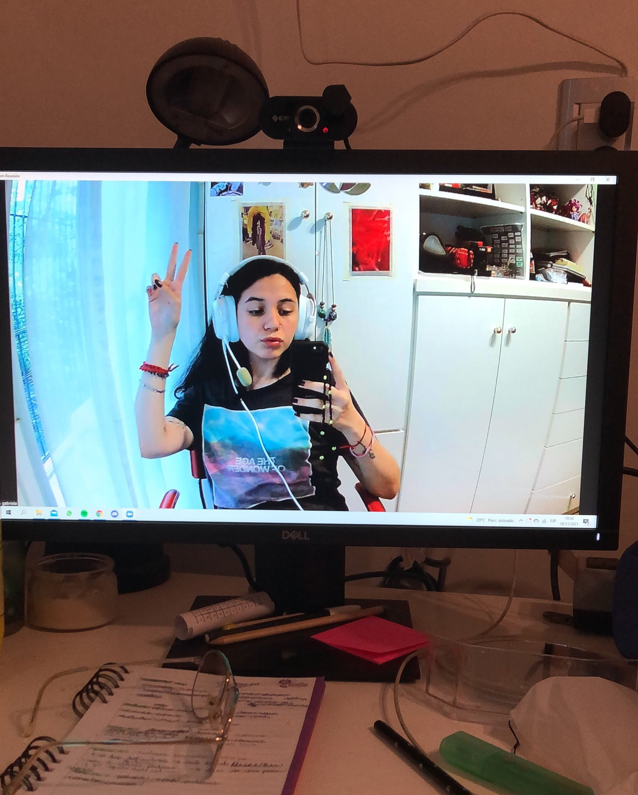

¿Quien soy?
  Mi nombre es Gabi Stancato, nací en 2001, en el barrio de Núñez, en
CABA, Buenos Aires; aunque eso no es tan relevante como las cosas de las que me gusta hablar en el
podcast. Tengo 20 años y siempre me apasionó el arte de comunicar, dejar más cuestionamientos que
respuestas, abrir más puertas que dejar un solo camino.
Desde el lugar en el que me
encuentro
ahora, en donde, en lo personal, siento que me falta mucha base teórica para hablar con argumentos,
me gusta tomar al podcast como un recorrido por mi experiencia de pasar de la adolescencia a la
adultez sin ningún tipo de anestesia. Y me gusta saber que no estoy sola, que se sienten
identificadas/os conmigo y mi camino, y saber las opiniones y experiencias de las/os demás también.
Me gusta tomarlo como algo más relajado que puedan escuchar en el camino a la facu, antes
de
dormirse, mientras ordenan; y que cuando pasen alguna experiencia que yo mencioné, se acuerden de mi
episodio y sea de ayuda. Brindar un poco de anestesia a la dura realidad no viene mal :)